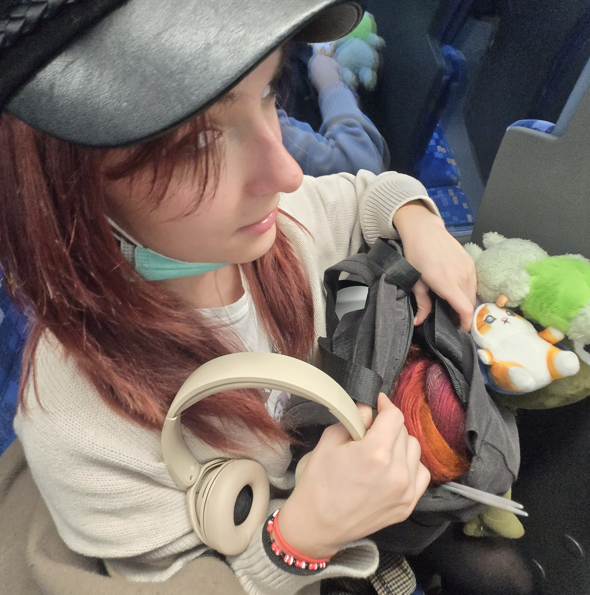
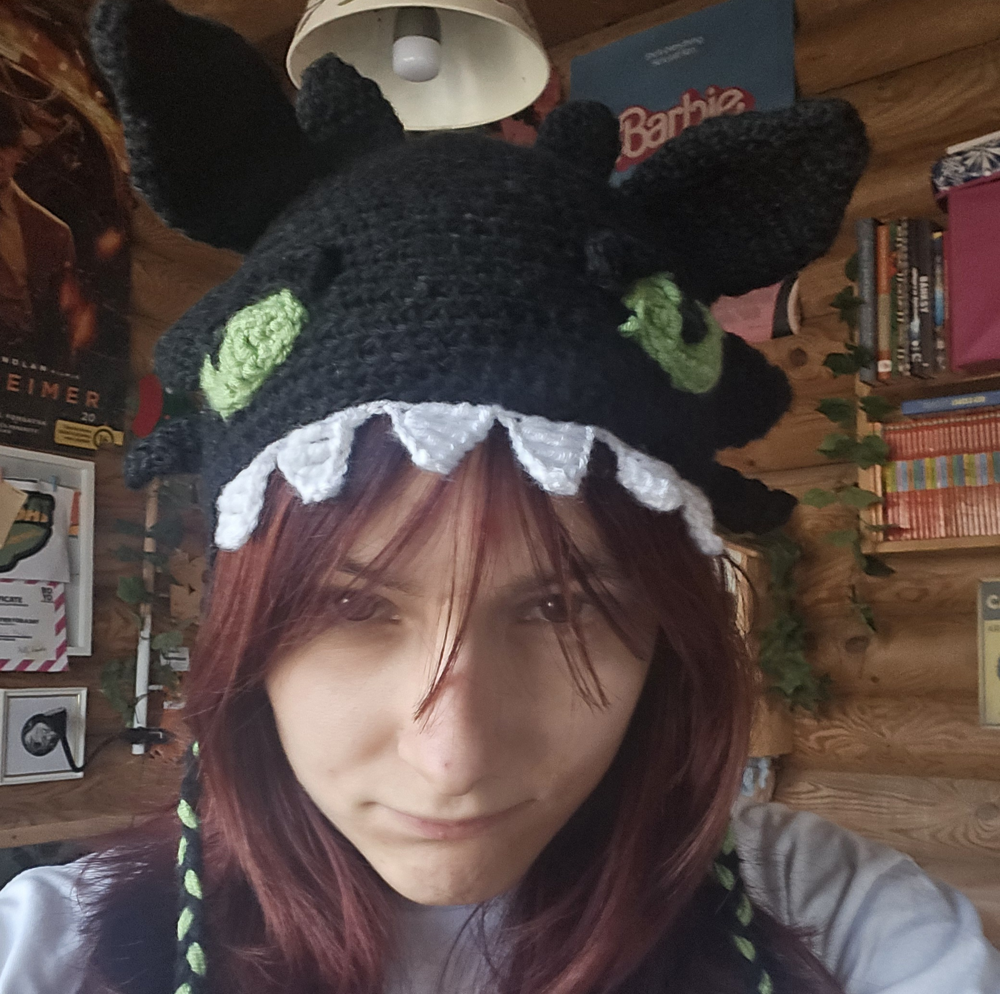

Intro
Call me Luca/Lucy. I’m a crochet content creator
who loves turning yarn into little pieces of magic 🧶
Sharing in both Hungarian and English. Just vibing,
creating, and stitching my thoughts into every project.
Rotate your phone to make it look better ♡

Call me Luca/Lucy. I’m a crochet content creator
who loves turning yarn into little pieces of magic 🧶
Sharing in both Hungarian and English. Just vibing,
creating, and stitching my thoughts into every project.

My inspiration to crochet,
aka the theme is usually
from games, from movies
and cool shit in general. I
prefer to crochet funny
hats or streetwear accesories
for myself or completing
my friends' requests.


